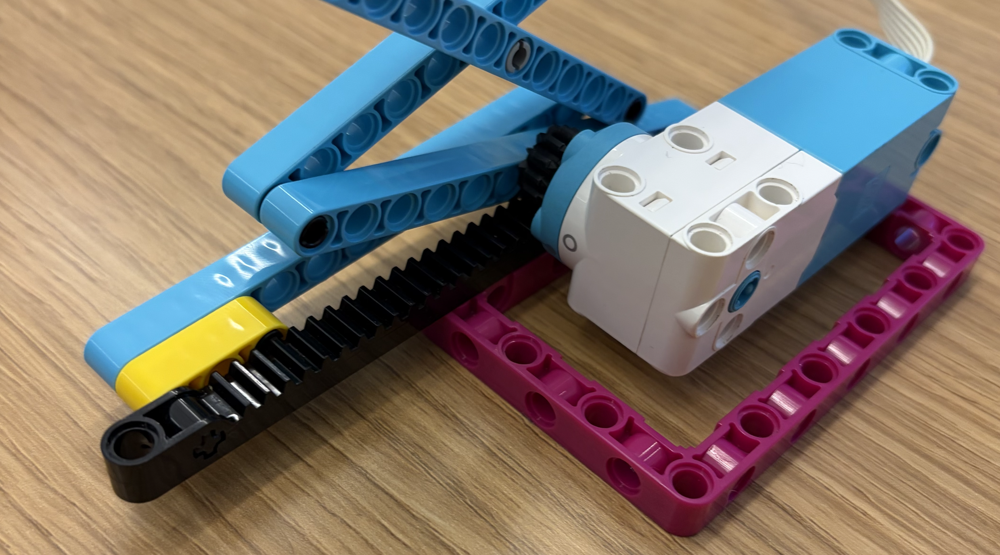
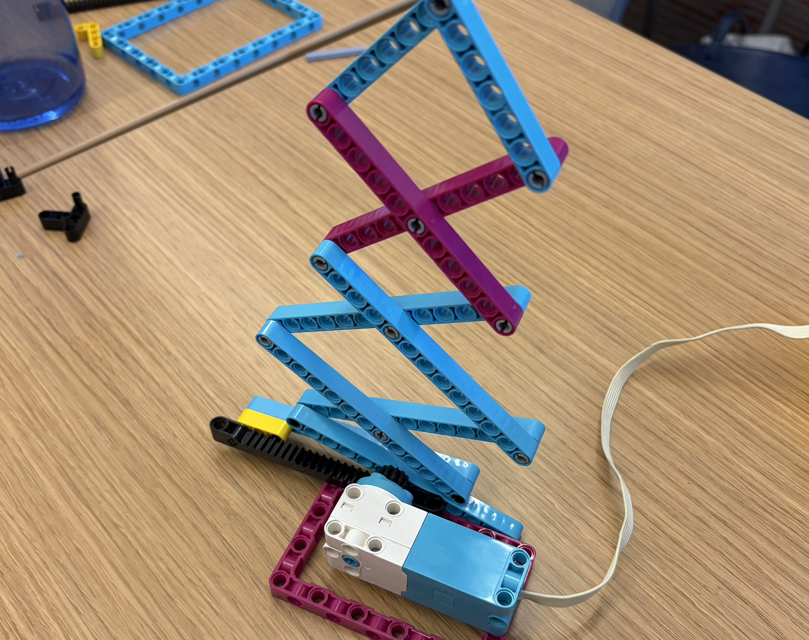

We used the small motor and a linear gear to make the scissor lift move up and down. You can make it faster by adding more gears to gear up, or slow it down by gearing down. We also found that you are able to make the scissor lift non-symmetric by adjusting where the pins connect. This allows the scissor lift to have different movement patterns.